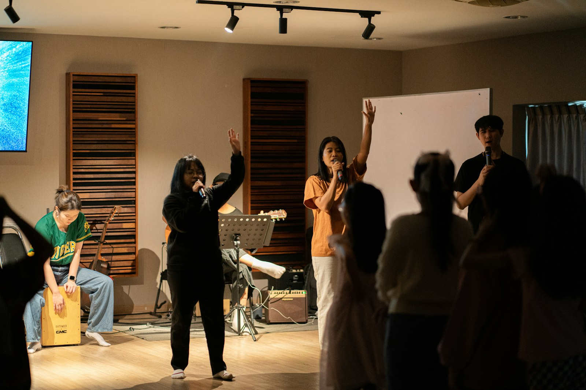
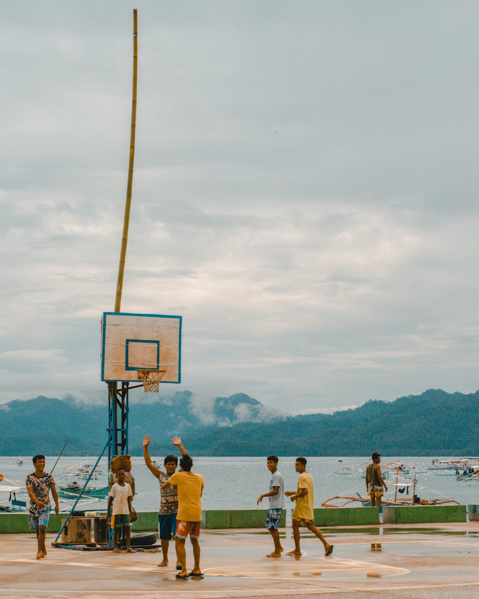
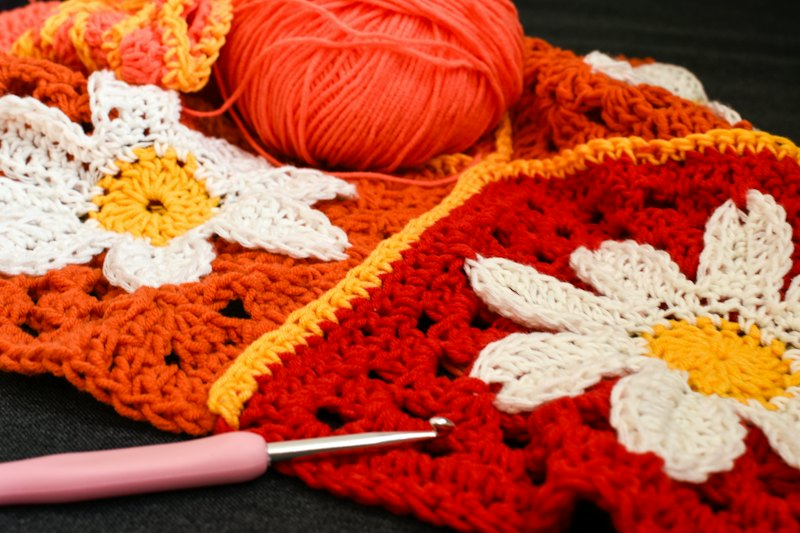
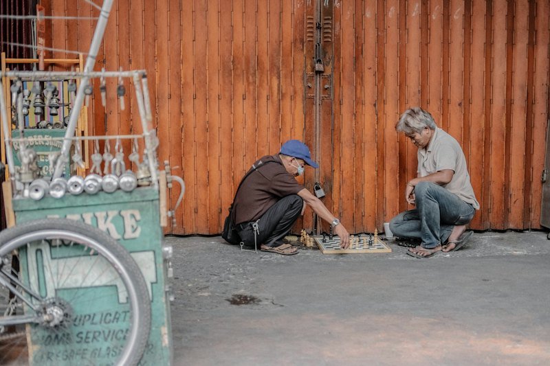
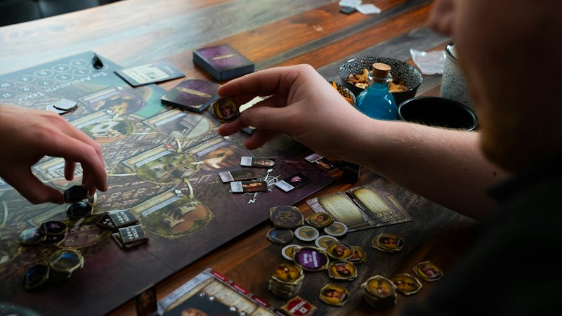

Community and hobbies
Feeling connected is part of wellbeing, and it's easier to connect around something you enjoy. Kadua curates hobby and interest groups, community organizations, and events, and shows you how to join. Groups are listed only after we've talked to the organizers and agreed on the rules.

Partner listings are being set up. The categories below show what the community section will hold. Each category gets real groups as partner organizers come on board and agree to the participation rules.
Participation rules
- Organizers are known to us. Every listed group has a named organizer we've spoken with and a way to reach them.
- Be kind, stay safe. No harassment, no sharing of other people's private information, no medical advice from members to members.
- Report anything. Every listing will carry a report link. Reports go to Kadua's moderation contact, are logged, and are acted on within 24 hours, with the organizer looped in.
- Peer support is not therapy. Support groups listed here are run by partner organizations with their own facilitators, who handle a member in distress and point to Immediate Help; the listing agreement says so. Groups are for adults; a member who may be a minor is referred to the organizer and to school or family support.
- Public first. Meetings happen in public places or on public platforms, and new members are told what to expect before they join.



Join, or run a group
Want to hear when groups near you open up? Or do you already run a hobby group, a community organization, a campus club, or a workplace program and want to be listed?
